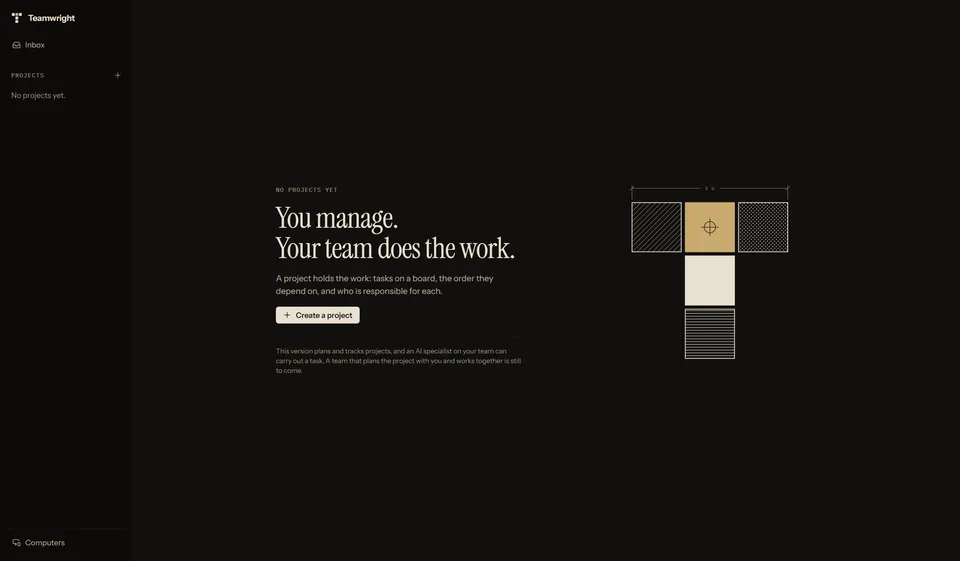
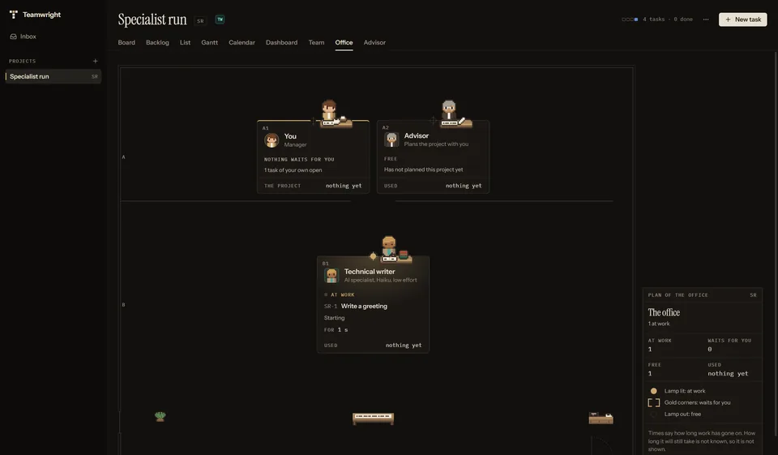
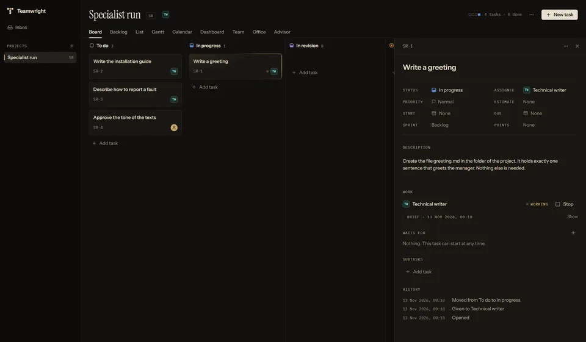
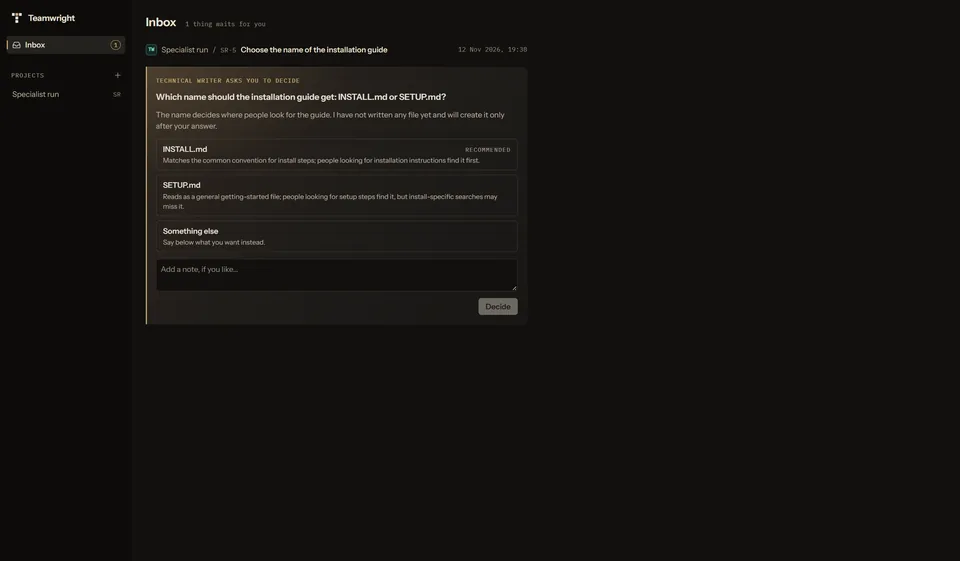
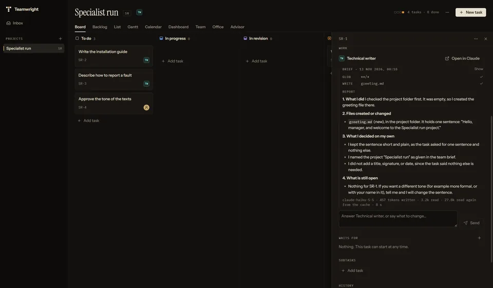
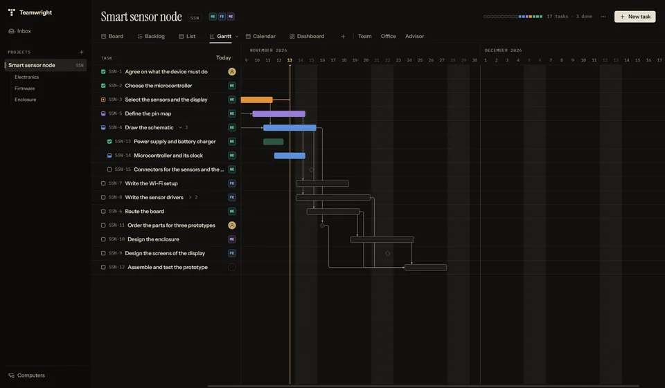
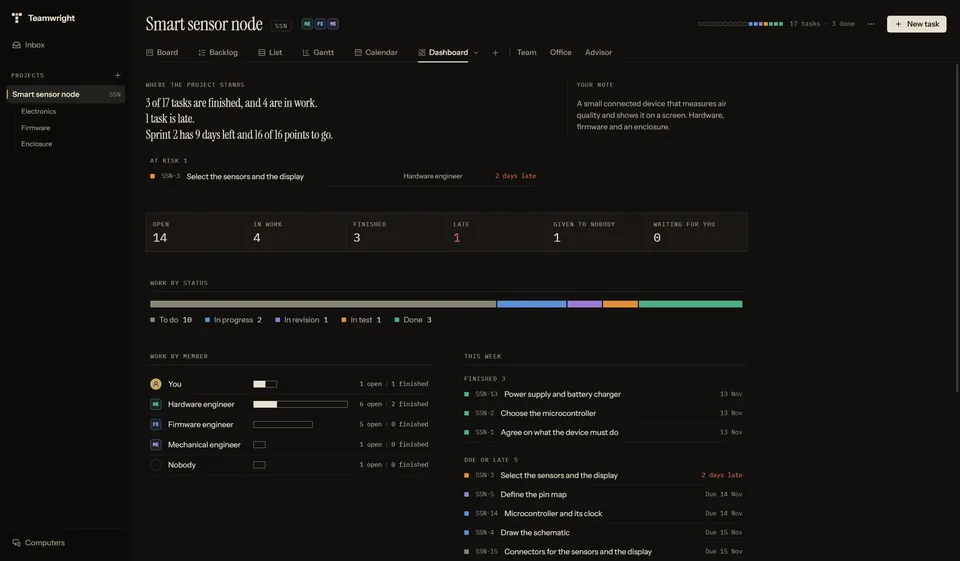

A desktop app · Open source
You manage. A right-sized team of AI specialists does the work.
The film, in nine chapters
01 · 0 to 11 s The wish
A desk at night under one lamp. A notebook holds a pencil sketch of a small box with a screen. A board, firmware and a case are too much for one person. Then the laptop opens on Teamwright.
- I want to build a sensor hub.
- A board. Firmware. A case.
- I wish I could.
- Teamwright exists.

02 · 11 to 26.417 s Tell the Advisor
The real program. The brief is typed, the Advisor asks its questions, then proposes three specialists and a plan of fourteen tasks. The manager approves.
- Tell the Advisor what you want.
- It asks what it needs to know.
- Then it proposes a team and a plan.
- You approve it.

03 · 26.417 to 53.208 s One plan, every view
The same project four days into its first sprint: the board of the sprint, the backlog with its sprints, story points and burndown, the list, the Gantt chart, the calendar and the dashboard. Then the chooser that adds a view, and the office with two specialists at work.
- Now your plan is a board.
- Four days into the first sprint.
- Run it in sprints, with a backlog, story points and a burndown.
- See the same plan as a list, a Gantt chart, or a calendar.
- The dashboard says where the project stands.
- Add the views you need.
- Specialists do the work, each on its task.

04 · 53.208 to 58.208 s The team at work
From a lamp of the office into a workshop: three benches, a lamp over each, one for each specialist.

05 · 58.208 to 69.208 s Schematic becomes board
On the bench of the hardware engineer a schematic draws itself in gold, and its lines sink into a bare board. Then the view glides low over the finished board: its pads, its tracks, its vias and its print.
- Schematic. Layout.

06 · 69.208 to 74.208 s A choice waits for you
The parts land on the board. The task that is the manager's, ordering the boards and parts, waits for the manager.
- When a choice is yours, it waits for you.

07 · 74.208 to 80.208 s The case comes down
On the bench of the mechanical designer the case closes round the board.
- Board, firmware, enclosure. One plan.

08 · 80.208 to 89.208 s It lives
The closed device lands on the desk. A hand pushes a USB-C plug in, and the screen comes on with its readings: carbon dioxide, temperature and humidity. The person at the desk looks at it and is glad.
- You decide. You build it.
09 · 89.208 to 107.208 s Teamwright
The mark of Teamwright, and where to find it.
- You manage. Your team does the work.
- This is just the beginning.
- Changing how projects are managed, and what one developer can build.
- Open source. Runs on your own Claude Code.
- github.com/fouad1233/teamwright
- Contribute, and star it if you like it.
01
What it is
Teamwright is a desktop app for running a project the way a manager runs a team. The team members are AI specialists. You are the manager.
It is made for one person with a project bigger than one conversation: an engineer, a maker or a founder who knows what the result should be and can judge whether it is right, but cannot be the hardware designer, the firmware developer, the mechanical designer and the project manager at the same time.
An AI agent is good at a task. A project is more than a pile of tasks: its parts depend on each other, and some choices are only yours. People solved this long ago with boards, timelines, sprints and a manager who makes the calls. Teamwright gives a team of AI specialists the same structure and keeps you in the manager's chair.
Teamwright is young. It started on 11 November 2026 and is built in the open, one small commit at a time. This page says what it does today, and says plainly what is not built yet.
02
How it works
-
You say what you want
Tell the Advisor, in your own words, what you want to build. The Advisor is an AI agent that works as your chief of staff.
-
The Advisor asks, then proposes
It asks what it needs to know, with questions you can answer by a click. Then it proposes the smallest team that can do the job, with a reason, a model and an effort for each specialist, and a plan: tasks, owners, what each task waits for, and estimates.
-
You approve
Nothing is created before you approve. You can take a specialist or a task out of the proposal first. A later round adds to the team and the plan you have.
-
Specialists work on their tasks
You start a task that is given to a specialist. It gets a brief, works in the folder of the project, shows every step as it happens, and reports. You can answer it and it goes on.
-
What is yours to decide waits for you
When a choice is yours, the specialist stops and asks. The question waits in your inbox with the options and what each one leads to.

Not built yet: specialists that hand their results to each other, and a coordinator that starts a task by itself when the work it waits for is done. Today you start each task. Both are next on the roadmap.
03
What is in it today
Every project is a place to plan and follow the work, with the views a project-management tool gives a team of people.
- Board
- Tasks in the statuses of your workflow, moved by drag and drop, with subtasks behind a fold. You name, color and order the statuses yourself.
- Backlog and sprints
- Plan, fill, start and complete sprints, with story points and a burndown. A completed sprint opens with its burndown and its tasks.
- List, Gantt, calendar
- The same tasks as a table, as bars against the days with lines from each task to the tasks that wait for it, and by month. On the Gantt chart a bar is dragged to change the dates.
- Dashboard
- Where the project stands, in sentences worked out by rules: the numbers, the work by status and by member, this week, the sprint, the tokens used, and a note of your own.
- Views you add
- Add a view, name it, filter it, order the tabs, and remove it again.
- Areas
- Cut a project into the jobs inside it, such as electronics, firmware and enclosure. An area shows only its tasks, in every view.
- The office
- The team drawn as a workshop in plan: a bench and a desk for everybody, a lamp lit where work goes on, and people who work, wait with a hand raised, or walk the aisles.
- History
- Every change is written into a log of operations. The history of a task is read from it, and when another computer made a change, it names that computer.
- Syncing
- Keep two computers in step through a folder you own, such as a cloud drive. Being built: it has run with two copies of the program on one computer, not yet between two real computers.



04
What it runs on
Teamwright runs on your own Claude Code, on your own computer.
It does not ship a model and does not ask for a password. It starts the Claude Code that is already installed on your computer, and that you signed in to yourself, and talks to it through its documented headless mode. Every specialist is a session of its own. It can read and write files in the folder of its project, read the folders you give it for reference, and nothing else.
Your data stays in a file on your disk: a local database. What the specialists make is ordinary files in the folder of the project. There is no account, no server and no telemetry. The tokens every turn uses are counted and shown, and a specialist with nothing to do is not running.
The program has been run on Windows. The build server builds and tests its code on Windows and on Linux. macOS is not among the systems it is checked on yet.
05
Open source
Teamwright is free and open source, under the Apache License 2.0. The code, the design, every decision and the story of how it was made are in the repository.
06
Get it and build it
Installers for Windows, macOS and Linux are on the releases page. They are not signed yet, and Teamwright is pre-alpha. You can also build it from its source code.
To look around first, try the demo: the interface in your browser, on a sample project, made for a computer's screen. Nothing is saved there, and no AI runs: the specialists only play their work.
To build it, you need:
- Rust
- Stable.
rustupreads the version from the repository. - A C compiler
- On Windows the Microsoft C++ Build Tools, or a setup without administrator rights.
- Node.js
- 22 or later.
- WebView2
- Windows only, and part of Windows 11. On Linux and macOS the prerequisites of Tauri apply.
- Claude Code
- Installed and signed in, for the Advisor and the specialists. Projects, tasks and every view work without it.
Then, in a terminal:
git clone https://github.com/fouad1233/teamwright.git
cd teamwright
npm install
npm run appnpm run app builds and opens the desktop app. To build it once, without opening it:
npm run tauri --workspace @teamwright/desktop -- build --debug --no-bundleOn Windows that gives target/debug/teamwright-desktop.exe. To see only the interface in a browser, on made-up data and without Rust, run npm run dev and open http://localhost:1420.
The development guide has the details, the checks and the tests.
07
Contribute
Issues and ideas are welcome now. The project is young and its foundations still move, so before a large change, open an issue and say what you want to do.
The contributing guide explains how the code is organized and the standards it follows: small commits, code that explains itself, documents that move with the code, and a written record of every lasting decision. It applies to people and to AI agents alike.
08
Questions
Is Teamwright free?
Yes. It is open source under the Apache License 2.0. The work of the Advisor and the specialists runs on your own Claude Code and uses your own plan there.
Can I download it?
Yes. Installers for Windows, macOS and Linux are on the releases page of the repository. They are not signed yet, so Windows and macOS warn before they open, and Teamwright is pre-alpha. You can also build it from the source code with Rust and Node.js, as the section above shows.
Do I need Claude Code?
For the Advisor and the specialists, yes: installed on your computer and signed in by you. Projects, tasks and every view work without it.
Where is my data?
In a database file on your own disk. What the specialists make is files in the folder of the project. There is no account, no server and no telemetry.
What can a specialist touch?
It reads and writes files in the folder of its project and reads the folders and files you give it for reference. It cannot reach anything else. When a choice is yours, it stops and asks.
Do the specialists work together on their own?
Not yet. Today each specialist works on the task you start for it. Handing results to each other, and a coordinator that starts tasks when the work they wait for is done, are the next steps on the roadmap.
Which systems does it run on?
It has been run on Windows. Its code is built and tested on Windows and Linux. macOS is not among the systems it is checked on yet.
Did Teamwright make the device in the film?
No. The interface in the film is the real program on a sample project, and the plan in it was proposed by a real Advisor. The board, the parts and the case are modelled for the film. The film shows what Teamwright is for, not a record of a finished device.